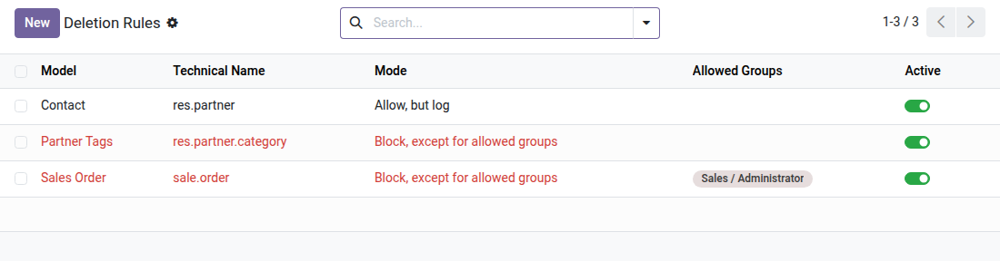
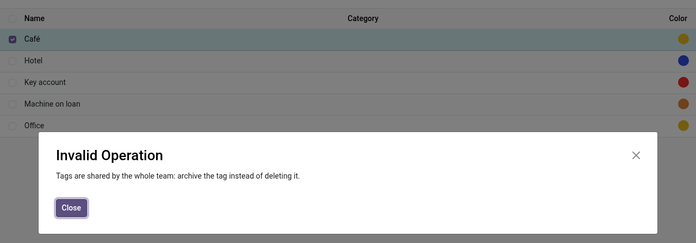
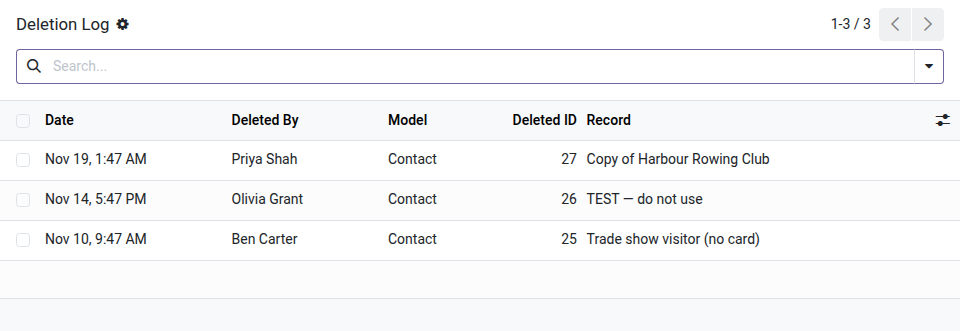

Block deletion model by model, reserve it for a few groups, and keep a record of every deletion.
A deletion leaves nothing behind: the record disappears, and its chatter with it. Odoo only offers one global right per model, granted or denied once and for all in the access rights — with no possible exception, no explanatory message, and not the slightest record of what was deleted.
Contacts can be deleted but every deletion is logged; tags are locked for everyone; orders can only be deleted by sales managers.

Deleting a tag is refused with the message written in the rule, administrator included.

Each deleted contact keeps its ID, its name at the time of deletion, the author and the date: the only details nothing can rebuild afterwards.

To go beyond deletion and restrict what each person sees, the OdooSkills range includes some fifteen access-restriction modules — by sales team, by department, by project, by accounting journal, by warehouse. Full catalog: apps.odooskills.com.
License LGPL-3 — compatible with Odoo 18.0 Community and Enterprise. Support: apps@odooskills.com.